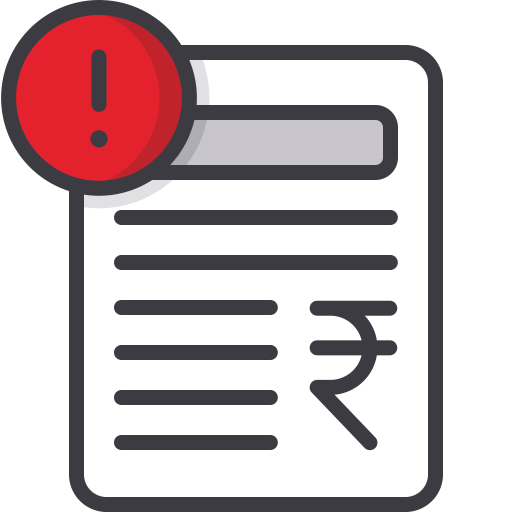

<ion-header class="ion-no-border">
    <ion-toolbar color="dark">
        <ion-title>
            Noticias guardadas
        </ion-title>
    </ion-toolbar>
</ion-header>

<ion-content [fullscreen]="true">


    <ion-card color="danger" *ngIf="localApi.noticias.length === 0">
        <ion-item color="warning">
            <ion-avatar>
                
            </ion-avatar>
            <ion-label>
                <h3><strong>Sin noticias favoritas</strong></h3>
                <ion-label>Este espacio es para las noticias relevantes</ion-label>
            </ion-label>
        </ion-item>
    </ion-card>

    <app-noticias *ngIf="localApi.noticias.length > 0" [noticias]="localApi.noticias" [enFavoritos]="true"></app-noticias>

</ion-content>